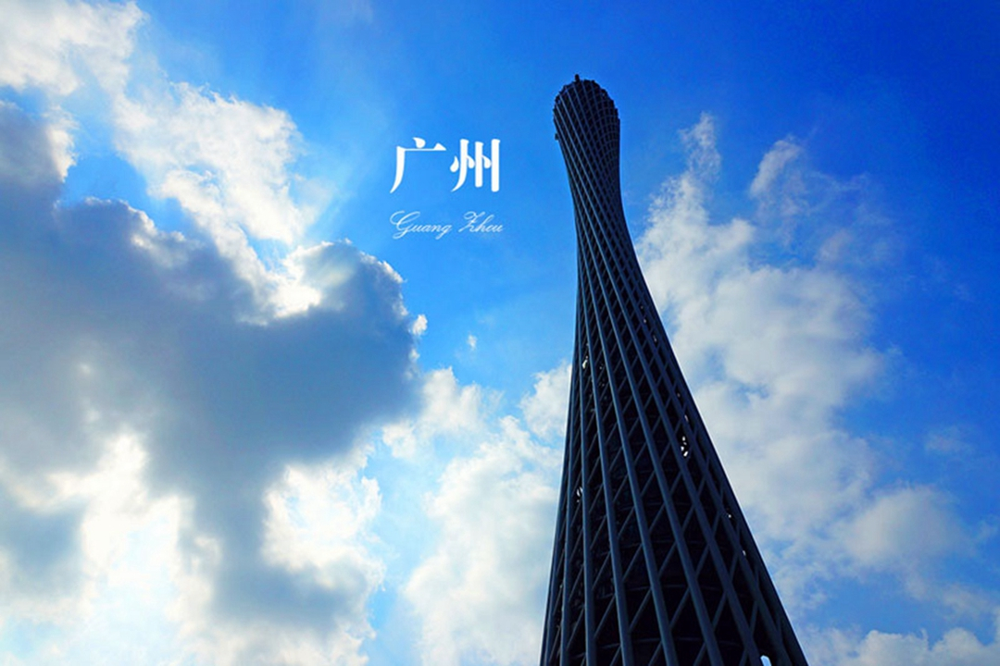
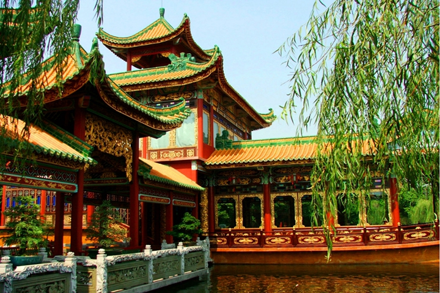

-
千风万景中遇见你 - 首页
- 精选
- 邂逅
-

- 消息

目的地>中国>广州
Guang Zhou

广州

广州天气
晴 21℃~24℃
147人来过这里
36篇旅游日志
36篇旅游日志

景点介绍
广州，简称穗，别称羊城、穗城、穗垣、仙城、花城；解放前旧称省城。地处中国南方，广东省南部，珠江三角洲的北缘，西江、北江、东江水道在此汇合，濒临南中国海，珠江入海口，毗邻港澳，地理位置优越，广州也是海上丝绸之路的起点，被称为中国的“南大门”。
广州的旅游业具有集旅游、饮食、住宿、购物、娱乐为一体的多功能、多层次、全方位服务的格局。众多的文物古迹、风景名胜和人文景观，使游客流连忘返。色、香、味、形俱全的粤菜及中外各色风味饮食，为广州带来“食在广州”的美称。粥、粉、面、饭、享誉盛名。拥有多家五星级酒店和众多不同档次的宾馆、旅店。“广州一日游”已成为广州旅游的特色品牌。
广州有着2200多年的文明历史，并在近代史上声名显赫，素以名胜古迹众多而闻名。主要有镇海楼、南越王墓、陈家祠、六榕寺、光孝寺等景点。广州还是美食和购物的天堂，老西关里各种别具风味的小吃，遍布市区形形色色的市场，上下九路商业步行街、北京路商业步行街等都让中外游客流连忘返。
景点美照

- 2016-2017© 遇见网® yujian.com All rights reserved.Version v1.00
遇见网为旅行爱好者提供记录自己旅途见闻并展示的个人空间。